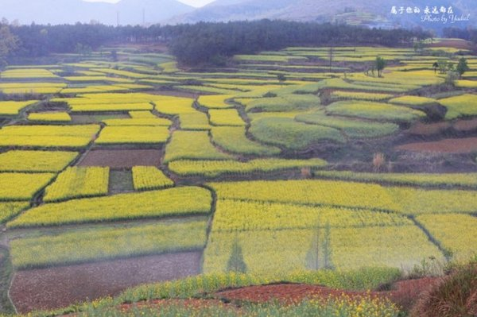
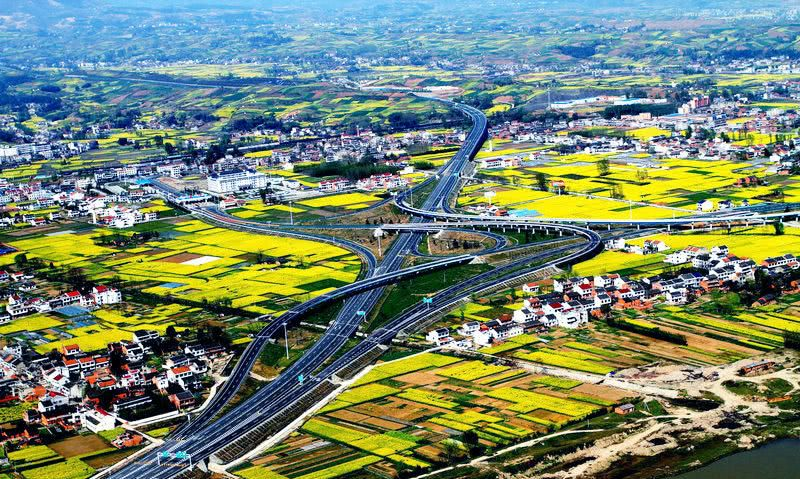

丰收，是辛勤劳作的最好回馈
 9月10日，在汉中市南郑区青树镇沙河村，金色的大地稻浪滚滚，稻香沁人。郑富俊迎来了又一年的水稻丰收季。趁着天气晴好，他安排了两辆联合收割机抢收水稻。只见联合收割机在田里来回穿梭，割稻、脱粒、粉碎稻秆、装车等工序一气呵成，一派繁忙的景象。 郑富俊管理着南郑区裕丰农机服务专业合作社，除了做农机服务外，他们合作社还从村民手里流转了1200余亩水稻田，自己种植水稻并销售。“我们在汉台区铺镇的水稻田有200多亩，主要用作优质稻培育和示范；其余的就在南郑区的沙河村，用作优质商品稻生产。”郑富俊说。 8月28日，郑富俊让工人们调试好收割机械。8月29日，正式开始收割。到9月10日，位于沙河村的稻田已收割了500余亩。据了解，收割机收回的稻谷将被集中送到烘干场，只需12至16小时即可烘干，随后就进仓储存。“我们合作社今年又引进了一套日产20吨精米的生产加工线，实现了种、收、烘干和加工为一体。”郑富俊说。 谈及销售情况，郑富俊十分兴奋。“我们的大米在市场上很受认可，卖到了西安、成都、广州、上海等地。再加上今年从中央到地方都在大力推进消费扶贫，合作社也因此受益，都有点供不应求了。”郑富俊说，“预计到明年三四月份就可完成全年销量，比平常提前一两个月。” 汉中地处秦岭南麓，被称为“西北的小江南”和“鱼米之乡”。进入9月，全市晴好天气利于秋粮作物收获。全市农业系统科学组织调度，全面提高三秋农机作业效率，强化农机作业安全管理，千方百计加快秋收进度，奋力做到粮食作物应收尽收，确保秋粮颗粒归仓。 据汉中市农业农村局的统计，截至9月9日，全市水稻收获面积101.7万亩，占总面积的84%；玉米收获面积74.2万亩，占总面积的68.5%。预计全市秋粮总收获面积268.6万亩，秋粮作物总产量达82.6万吨，分别较去年增长1.15%和2.6%。 伴随着水稻、玉米等秋粮作物大丰收，汉中市在2020年农民丰收节期间举办多项活动。